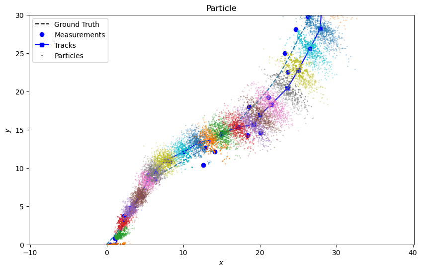
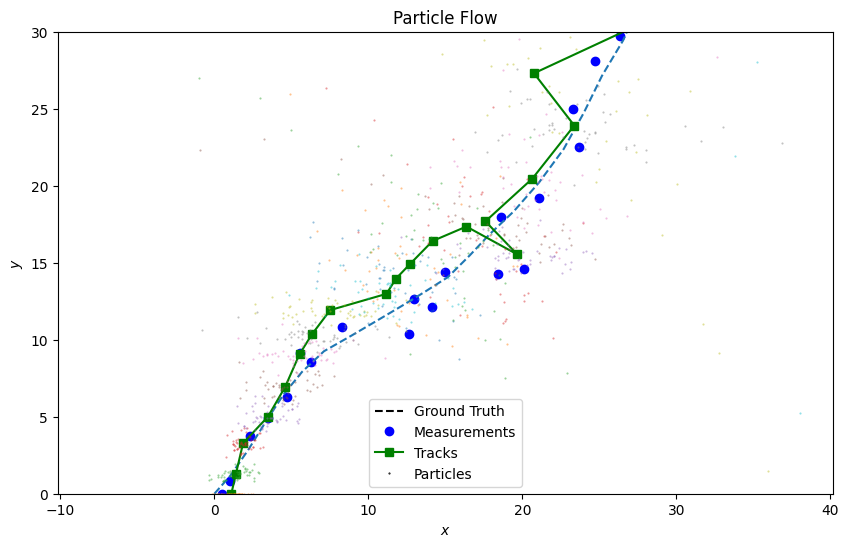
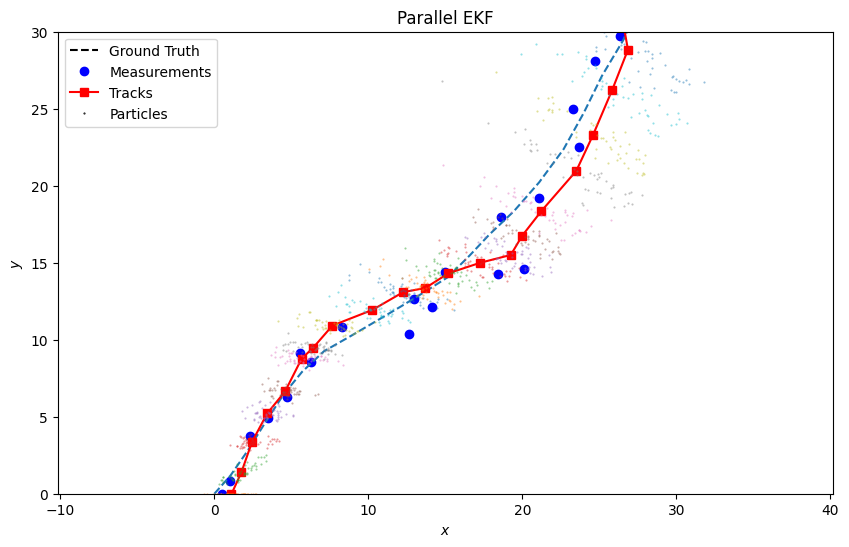

Note
Click here to download the full example code or to run this example in your browser via Binder
Gromov Particle Flow Filter
This example looks at utilising the Generalized Gromov method for stochastic particle flow filters.
The Filter
We use the simple exact formula solution 1 to the equation:
where \(p(x, λ)\) is the conditional probability density of \(x\) as a function of \(λ\in [0, 1]\), \(f\) is the drift function and \(Q\) is the diffusion covariance.
Under the assumption that the prior density and likelihood are both multivariate Gaussian densities, and that \(Q\) is a symmetric positive semi-definite matrix independent of \(x\), we have the simple exact formula:
where \(Q\) can be guaranteed to be positive, semi-definite by taking
Using \(Q\), we can generate random samples of the diffusion for use in the stochastic flow of particles.
Comparison
Comparing the bootstrap Smartfusion Particle filter, the Gromov particle flow filter, and the Gromov particle flow filter with parallel EKF covariance computation (2 using algorithm 2 with Gromov flow).
To note with particle flow, that resampling isn’t required and lower numbers of particles are needed, as it doesn’t suffer the same issues of degeneracy as bootstrap particle filter.
One time-step
import datetime
import numpy as np
from scipy.stats import multivariate_normal
from smartfusion.types.groundtruth import GroundTruthPath, GroundTruthState
from smartfusion.models.measurement.nonlinear import CartesianToBearingRange
from smartfusion.types.detection import Detection
from smartfusion.predictor.particle import ParticlePredictor, ParticleFlowKalmanPredictor
from smartfusion.models.transition.linear import CombinedLinearGaussianTransitionModel, \
ConstantVelocity
from smartfusion.updater.particle import ParticleUpdater, GromovFlowParticleUpdater, \
GromovFlowKalmanParticleUpdater
from smartfusion.types.particle import Particle
from smartfusion.types.numeric import Probability
from smartfusion.types.state import ParticleState
np.random.seed(2020)
start_time = datetime.datetime(2020, 1, 1)
truth = GroundTruthPath([
GroundTruthState([4, 4, 4, 4], timestamp=start_time + datetime.timedelta(seconds=1))
])
measurement_model = CartesianToBearingRange(
ndim_state=4,
mapping=(0, 2),
noise_covar=np.diag([np.radians(0.5), 1])
)
measurement = Detection(measurement_model.function(truth.state, noise=True),
timestamp=truth.state.timestamp,
measurement_model=measurement_model)
transition_model = CombinedLinearGaussianTransitionModel([ConstantVelocity(0.05),
ConstantVelocity(0.05)])
p_predictor = ParticlePredictor(transition_model)
pfk_predictor = ParticleFlowKalmanPredictor(transition_model) # By default, parallels EKF
predictors = [p_predictor, p_predictor, pfk_predictor]
p_updater = ParticleUpdater(measurement_model)
f_updater = GromovFlowParticleUpdater(measurement_model)
pfk_updater = GromovFlowKalmanParticleUpdater(measurement_model) # By default, parallels EKF
updaters = [p_updater, f_updater, pfk_updater]
number_particles = 1000
samples = multivariate_normal.rvs(np.array([0, 1, 0, 1]),
np.diag([1.5, 0.5, 1.5, 0.5]),
size=number_particles)
# Note weights not used in particle flow, so value won't effect it.
weight = Probability(1/number_particles)
particles = [
Particle(sample.reshape(-1, 1), weight=weight) for sample in samples]
Run the filters
from matplotlib import pyplot as plt
from smartfusion.types.hypothesis import SingleHypothesis
fig = plt.figure(figsize=(10, 6))
ax = fig.add_subplot(1, 1, 1)
ax.axis('equal')
filters = ['Particle', 'Particle Flow', 'Parallel EKF']
particle_counts = [1000, 50, 50]
colours = ['blue', 'green', 'red']
handles, labels = [], []
for predictor, updater, colour, filter, particle_count \
in zip(predictors, updaters, colours, filters, particle_counts):
prior = ParticleState(None, particle_list=particles[:particle_count], timestamp=start_time)
prediction = predictor.predict(prior, timestamp=measurement.timestamp)
hypothesis = SingleHypothesis(prediction, measurement)
post = updater.update(hypothesis)
handles.append(ax.scatter(post.state_vector[0, :], post.state_vector[2, :], color=colour, s=2))
labels.append(filter)
ax.scatter(*truth.state_vector[[0, 2]], color='black')
ax.legend(handles=handles, labels=labels)
Multiple time-steps
truth = GroundTruthPath([GroundTruthState([0, 1, 0, 1], timestamp=start_time)])
for k in range(1, 21):
truth.append(
GroundTruthState(transition_model.function(truth[k-1],
noise=True,
time_interval=datetime.timedelta(seconds=1)),
timestamp=start_time+datetime.timedelta(seconds=k))
)
measurements = []
for state in truth:
measurement = measurement_model.function(state, noise=True)
measurements.append(Detection(measurement, timestamp=state.timestamp,
measurement_model=measurement_model))
number_particles = 1000
samples = multivariate_normal.rvs(np.array([0, 1, 0, 1]),
np.diag([1.5, 0.5, 1.5, 0.5]),
size=number_particles)
weight = Probability(1/number_particles)
particles = [Particle(sample.reshape(-1, 1), weight=weight)
for sample in samples]
from smartfusion.resampler.particle import SystematicResampler
from smartfusion.types.track import Track
from smartfusion.dataassociator.tracktotrack import TrackToTruth
from smartfusion.metricgenerator.manager import SimpleManager
from smartfusion.metricgenerator.tracktotruthmetrics import SIAPMetrics
from smartfusion.plotter import Plotter
from smartfusion.measures import Euclidean
updaters[0].resampler = SystematicResampler() # Allow particle filter to re-sample
pa = dict()
siap_gen = SIAPMetrics(position_measure=Euclidean((0, 2)), velocity_measure=Euclidean((1, 3)))
for predictor, updater, colour, filter, particle_count \
in zip(predictors, updaters, colours, filters, particle_counts):
track = Track()
prior = ParticleState(None, particle_list=particles[:particle_count], timestamp=start_time)
for measurement in measurements:
prediction = predictor.predict(prior, timestamp=measurement.timestamp)
hypothesis = SingleHypothesis(prediction, measurement)
post = updater.update(hypothesis)
track.append(post)
prior = track[-1]
plotter = Plotter()
plotter.plot_ground_truths(truth, [0, 2])
plotter.plot_measurements(measurements, [0, 2])
plotter.plot_tracks(track, [0, 2], particle=True, color=colour)
plotter.ax.set_title(filter)
plotter.ax.set_xlim(0, 30)
plotter.ax.set_ylim(0, 30)
metric_manager = SimpleManager(
[siap_gen], associator=TrackToTruth(association_threshold=np.inf))
metric_manager.add_data(tracks={track}, groundtruth_paths={truth})
metrics = metric_manager.generate_metrics()
pa[filter] = metrics.get("SIAP Position Accuracy at times")
- 
- 
- 
Positional Accuracy
from matplotlib.lines import Line2D
fig2 = plt.figure(figsize=(10, 6))
ax2 = fig2.add_subplot(1, 1, 1)
ax2.axis('equal')
handles = list()
labels = list()
for (filter, value), colour in zip(pa.items(), colours):
ax2.plot(range(len(value.value)), [elem.value for elem in value.value], color=colour)
handles.append(Line2D([], [], color=colour))
labels.append(filter)
ax2.legend(handles=handles, labels=labels)
ax2.set_ylim(0, 6)
_ = ax2.set_title('Positional Accuracy')
References
- 1
Fred Daum, Jim Huang & Arjang Noushin 2017, Generalized Gromov method for stochastic particle flow filters
- 2
Tao Ding and Mark J. Coates 2012, IMPLEMENTATION OF THE DAUM-HUANG EXACT-FLOW PARTICLE FILTER
Total running time of the script: ( 0 minutes 9.118 seconds)